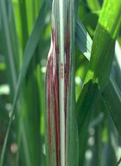

SUGARCANE :: MAJOR DISEASE :: RED STRIP
Red stripe - Pseudomonas rubrilineans
Symptoms
The disease first makes it appearance on the basal part of the young leaves. The stripes appear as water soaked, long, narrow chlorotic streaks and become reddish brown in few days. These stripes are 0.5 to 1 mm in width and 5-100 mm in length, run parallel to the midrib. The stripes remain confined to lower half of the leaf lamina and whitish flakes spreads to growing points of the shoot and yellowish stripes develop, which later turn reddish brown. The rotting may commence from the tip of the shoot and spreads downwards. The core is discoloured to reddish brown and shrivelled and form cavity in the centre. In badly affected fields, a foul and nauseating smell appears.
|  |
Symptoms |
Pathogen
The bacterium is a short rod (0.7 X 1.67µm), gram negative, non capsulate with a polar flagellum.
Favourable Conditions
- Continuous ratooning and prolonged rainy weather with low temperature (250 C)
Disease cycle
The pathogen remains viable in the soil and infected plant residues. The bacterium also survives on sorghum, pearlmillet, maize, fingermillet and other species of Saccharum. The bacterium primarily spreads through infected canes. The secondary spread is mainly through rainsplash, irrigation water and insects. Infected parenchymatous cells may collapse and normal functioning of the plant parts may fail. Several grasses, including ragi and bajra, have been reported to be infected by the bacteria and these hosts may also play a role in the perpetuation and spread of the pathogen.
Management
- Whenever the disease is noticed; the affected plants should be removed and burnt.
- Growing resistant varieties Select setts from the healthy fields.
- Avoid growing collateral hosts near the sugarcane fields.